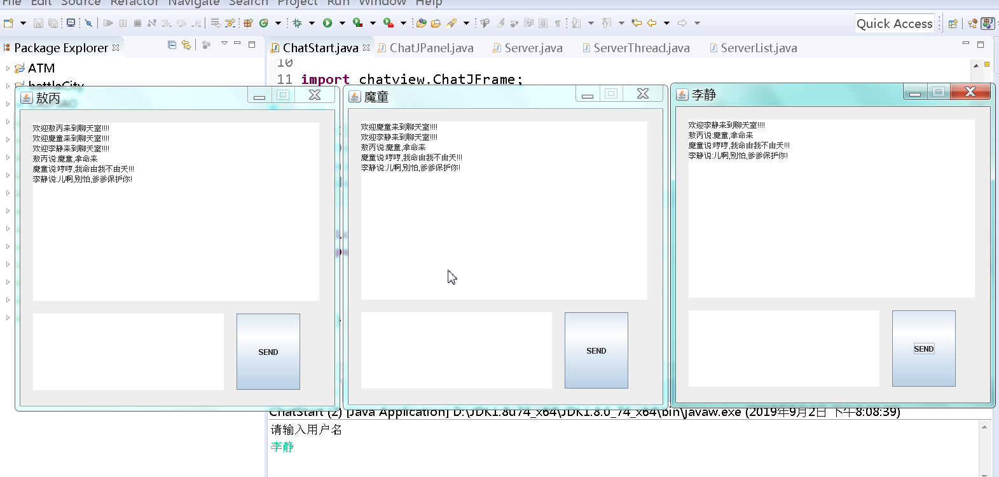
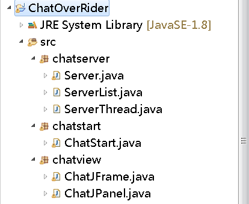

功能需求:
1 每运行一次主函数,创建一个客户端聊天界面;
2 客户端界面分三块,公屏(显示所有客户端发送的信息),私屏(用于输入个人想要发送的信息),发送按钮(点击一次,将客户端信息发送到服务端)
3 进入客户端时公屏提示 欢迎xxx来到多人聊天室,关闭客户端时提示 xxx已离开聊天室
4 客户端展示在文末,源文件地址也在文末,可以直接转尾部
============================================================================
所需知识:
1 IO流基础知识,用于读写发送的信息
2 Jframe jpane,用于创建图形界面
3 socket基础知识,用于创建客户端,服务端,互相传递信息
4 线程基础知识
5 计时器基础知识
======================================================================
主要思路:
1 创建客户端界面,
2 在界面中创建客户端,每点击一次,就发送信息到服务端
3 服务端一直开启,持续接受客户端信息.然后将接受到的信息发送到所有客户端
4 客户端将服务器发送的信息显示在公屏
===========================================================================
代码如下:
第一步:画客户端外边框
/**
* @Title: chatJFrame.java
* @Package view
* @Description:
* @author Mr.Yao
* @date 2019年8月28日下午4:53:47
* @version V1.0
*/
package chatview;
import java.awt.Dimension;
import java.awt.Toolkit;
import java.util.Scanner;
import javax.swing.JFrame;
/**
* @ClassName: chatJFrame
* @Description: 继承JFrame,画聊天界面外边框
* @author Mr.Yao
* @date 2019年8月28日下午4:53:47
*
*/
public class ChatJFrame extends JFrame {
//重写构造方法
public ChatJFrame() {
//输出让用户输入用户名,作为之后客户端的名字
System.out.println("请输入用户名");
Scanner input=new Scanner(System.in);
String name=input.next();
//设置聊天室的名称
this.setTitle(name);
//获取屏幕
Toolkit dt = Toolkit.getDefaultToolkit();
Dimension ss = dt.getScreenSize();
//获取屏幕宽高
int width = (int)ss.getWidth();
int height = (int)ss.getHeight();
//设置居中和宽高
this.setBounds((width - 500) /2,(height - 500)/2,500,500);
//添加chatJPanl对象,添加画布,并传入姓名
this.add(new ChatJPanel(name));
//设置禁止窗口缩放
this.setResizable(false);
//当关闭窗口时关闭JVm,
this.setDefaultCloseOperation(this.EXIT_ON_CLOSE);
//设置可见
this.setVisible(true);
}
}=====================================================================
第二步 创建画布,并建立客户端
如何做到点击send按钮发送信息-?---------->建按钮点击事件,点击一次就获取当前文本输入框的信息,并用write()方法写出到服务端
如何做到持续接受服务端发来的信息?----------->利用计时器,每0.5s执行一次,如果服务端有发送信息,则将其显示到公屏中
/**
* @Title: chatJPane.java
* @Package view
* @Description:
* @author Mr.Yao
* @date 2019年8月28日下午4:54:05
* @version V1.0
*/
package chatview;
import java.awt.event.ActionEvent;
import java.awt.event.ActionListener;
import java.io.IOException;
import java.io.InputStream;
import java.io.OutputStream;
import java.net.Socket;
import java.net.UnknownHostException;
import java.util.Timer;
import java.util.TimerTask;
import javax.swing.JButton;
import javax.swing.JPanel;
import javax.swing.JTextArea;
/**
* @ClassName: chatJPane
* @Description: 继承JPanl类,用于画图形中三块区域,并建立客户端发送信息和接受信息的功能
* @author Mr.Yao
* @date 2019年8月28日下午4:54:05
*
*/
public class ChatJPanel extends JPanel{
//声明姓名字符串,用于接收chatJFrame传过来的用户姓名
public String name;
//添加文本域,作为聊天信息公屏框
public JTextArea screen;
//添加文本域,作为用户信息输入框
public JTextArea input;
//添加发送按钮,点击按钮,将输入框信息发送出去
public JButton send;
//申明客户端
public Socket socket;
//申明客户端输出,输入流
OutputStream os;
InputStream is;
//无参构造方法
public ChatJPanel() {}
//有参构造
public ChatJPanel(String name) {
//接收用户姓名
this.name=name;
//取消流式布局
this.setLayout(null);
//创建公屏并设置宽高
screen=new JTextArea();
screen.setBounds(20, 20, 450, 280);
this.add(screen);
//创建输入框并设置宽高
input=new JTextArea();
input.setBounds(20,320,300,120);
this.add(input);
//创建按钮,并设置宽高
//按钮对象
send = new JButton();
send.setBounds(340, 320, 100, 120);
send.setText("SEND");
this.add(send);
//新建客户端对象,并设置ip地址和端口号
try {
socket=new Socket("127.0.0.01",12321);
//获取客户端输入 输出流
os=socket.getOutputStream();
is=socket.getInputStream();
//输出欢迎xxx来到聊天室
String s="欢迎"+name+"来到聊天室!!!!";
os.write(s.getBytes());
os.flush();
} catch (UnknownHostException e) {
// TODO Auto-generated catch block
e.printStackTrace();
} catch (IOException e) {
// TODO Auto-generated catch block
e.printStackTrace();
}
/*给按钮添加点击功能,点击按钮时将输入框信息发送到服务端*/
send.addActionListener(new ActionListener() {
@Override
//重写方法
public void actionPerformed(ActionEvent e) {
//获取输入框当前的内容,并加上用户姓名
String text = name+"说:"+input.getText();
//将输入框输出到服务端
try {
//写出数据
os.write(text.getBytes());
//刷新
os.flush();
} catch (IOException e1) {
// TODO Auto-generated catch block
e1.printStackTrace();
}
//清空输入框
input.setText("");
}
});
//创建计时器,每500毫秒启动一次,接受服务端发出来的信息
new Timer().schedule(new TimerTask() {
@Override
//重写方法,接受服务端的信息
public void run() {
// TODO Auto-generated method stub
//定义字符串,接受服务器返回的信息
String text="";
try {
//创建byte数组,保存服务器返回的字节信息
byte[] b=new byte[1024];
//定义变量记录读取的字节数
int len=-1;
//读取服务器返回字节
len=is.read(b);
//转换为字符
text=new String(b,0,len);
} catch (IOException e) {
// TODO Auto-generated catch block
e.printStackTrace();
}
if(text!="") {
//添加到屏幕
screen.append(text+"\n");
}
}
},500,500);
}
}===========================================================================
第三步 创建服务端
如何做到服务持续接受不同客户端信息并发送到所有客户端?-------> 服务一直开启,利用死循环 while()不停接受客户端soket,每接受一个就添加到一个集合中,并创建一个线程.线程的内容是遍历集合,将服务端接受的信息发送到所有客户端
创建集合,用于保存服务端接受到的socket
/**
* @Title: ServerList.java
* @Package chatserver
* @Description:
* @author Mr.Yao
* @date 2019年8月28日下午7:56:41
* @version V1.0
*/
package chatserver;
import java.net.Socket;
import java.util.ArrayList;
/**
* @ClassName: ServerList
* @Description: 创建集合,保存每个客户端的socket
* @author Mr.Yao
* @date 2019年8月28日下午7:56:41
*
*/
public class ServerList {
//创建集合
public static ArrayList<Socket> list=new ArrayList<Socket>();
}
server类用于接受客户端并开启线程,还需建立一个线程类,并重写run方法,重写后的run方法用于遍历集合并将信息输出到所有客户端
/**
* @Title: Server.java
* @Package chatserver
* @Description:
* @author Mr.Yao
* @date 2019年8月28日下午7:53:37
* @version V1.0
*/
package chatserver;
import java.io.IOException;
import java.io.InputStream;
import java.io.OutputStream;
import java.net.ServerSocket;
import java.net.Socket;
/**
* @ClassName: Server
* @Description: 创建服务器,持续接受客户端信息
* @author Mr.Yao
* @date 2019年8月28日下午7:53:37
*
*/
public class Server {
public static void main(String[] args) {
// TODO Auto-generated method stub
//创建服务器
ServerSocket ss = null;
try {
ss=new ServerSocket(12321);
//循环接受客户端
while(true) {
Socket socket = ss.accept();
//将socket添加到数组
ServerList.list.add(socket);
//创建匿名线程并启动
new Thread(new ServerThread(socket)).start();
}
} catch (IOException e) {
// TODO Auto-generated catch block
e.printStackTrace();
}
}
}ServerThread类实现了runnable接口,重写run方法
/**
* @Title: ServerThread.java
* @Package chatserver
* @Description:
* @author Mr.Yao
* @date 2019年8月29日上午11:58:47
* @version V1.0
*/
package chatserver;
import java.io.IOException;
import java.io.InputStream;
import java.io.OutputStream;
import java.net.Socket;
/**
* @ClassName: ServerThread
* @Description: 创建线程类,用于循环接受客户端的信息和将信息发送到所有的客户端
* @author Mr.Yao
* @date 2019年8月29日上午11:58:47
*
*/
public class ServerThread implements Runnable {
//声明变量,接受用户客户端名称,用于输出XXX下线了
public String name=null;
//声明socket对象
public Socket socket;
//无参构造
public ServerThread() {}
//传参构造
public ServerThread(Socket socket) {
this.socket=socket;
}
//重写run方法
@Override
public void run() {
// TODO Auto-generated method stub
//创建输入流
try {
InputStream is=socket.getInputStream();
//持续接受客户端信息
while(true) {
//接受客户端信息
byte[] b=new byte[1024];
int len=-1;
len=is.read(b);
//获取客户名称,从第一句 欢迎xxx来到客户端中截取出名称
String string=new String(b,0,len);
if(string.contains("欢迎")&&name==null) {
//截取名称
name=string.substring(2,string.indexOf("来"));
}
//将该信息发送到每个客户端
for(Socket socket:ServerList.list) {
//创建输出流
OutputStream os=socket.getOutputStream();
//输出信息
os.write(b, 0, len);
//刷新
os.flush();
}
}
}catch (IOException e) {
// TODO: handle exception
//出现异常,说明该客户端已关闭,向其他在线客户端发送信息:xxx下线了
// e.printStackTrace();
//将集合中的已关闭的socket对象删除,
ServerList.list.remove(this.socket);
//循环输出信息
for(Socket socket:ServerList.list) {
//创建输出流
try {
OutputStream os = socket.getOutputStream();
//输出信息
os.write((name+"下线了").getBytes());
//刷新
os.flush();
} catch (IOException e1) {
// TODO Auto-generated catch block
e1.printStackTrace();
}
}
}
}
}
第四步 创建启动类,写主函数
/**
* @Title: ChatStart.java
* @Package chatstart
* @Description:
* @author Mr.Yao
* @date 2019年8月28日下午7:51:14
* @version V1.0
*/
package chatstart;
import chatview.ChatJFrame;
/**
* @ClassName: ChatStart
* @Description: 主方法,程序入口
* @author Mr.Yao
* @date 2019年8月28日下午7:51:14
*
*/
public class ChatStart {
public static void main(String[] args) {
// TODO Auto-generated method stub
//创建jf边框对象
ChatJFrame jf=new ChatJFrame();
}
}
==============================================================================================
运行效果展示:
---->需要先运行server,开启服务端.然后运行主函数,每运行一次,就会创建一个客户端

-----源文件目录结构:

源码:
链接：https://pan.baidu.com/s/18aPqsoJsP4ZZYf6ZkWzU-g
提取码：exva